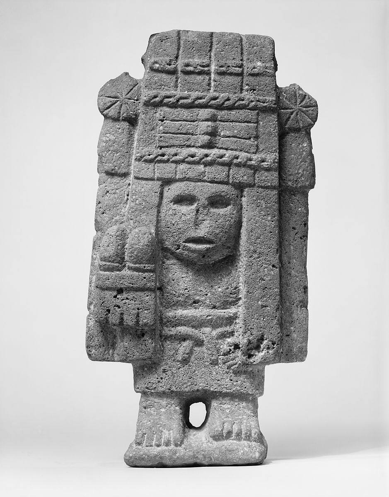
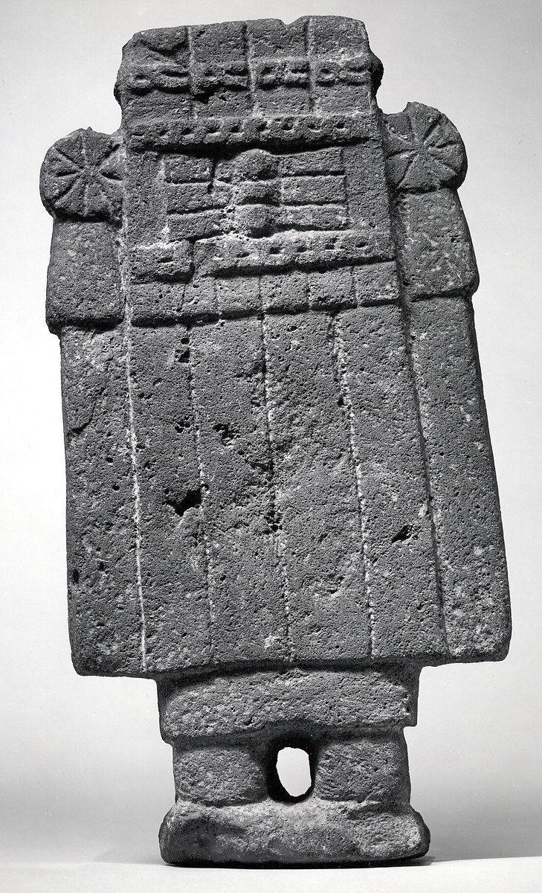
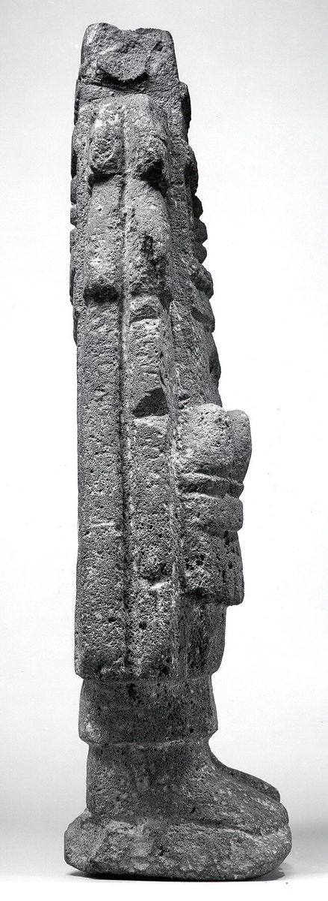
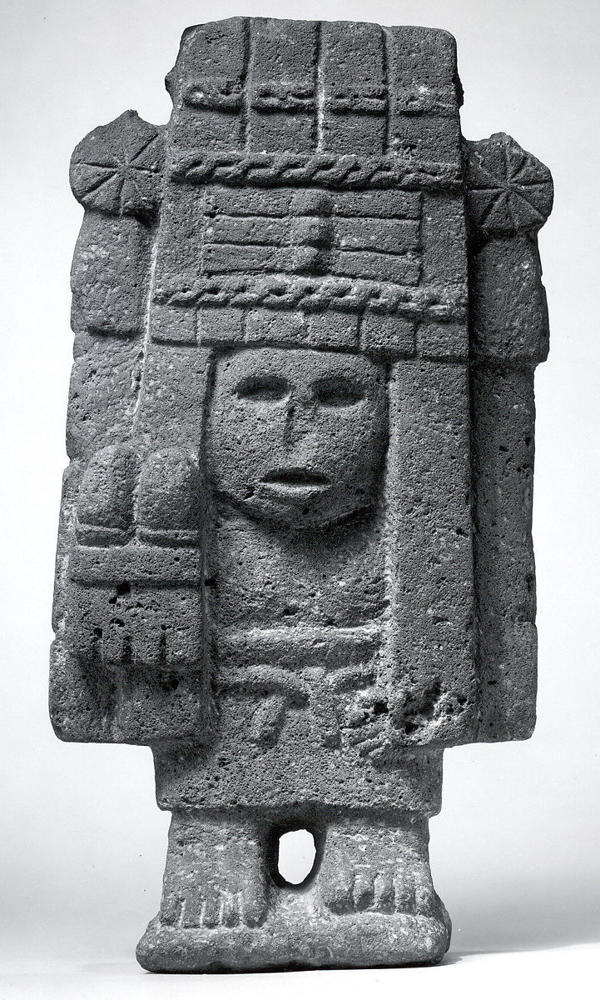

-

- 
- 
- 
- 
Maize Deity (Chalchiuhtlicue)
15th–early 16th century
Among the many female deities worshipped by the Aztecs, those responsible for agricultural fertility held a prominent place. This sculpture depicts Chicomecoátl (seven serpents), a goddess of sustenance, especially of edible plants and corn. She is shown standing on bare feet wearing a long skirt held in place with a belt, and holding in her right hand two maize ears. Her head and most of her body are covered by a towering quadrangular headdress adorned with twisted elements across the front and rosettes at the corners. Taller than the figure itself, the headdress is known as amacalli ("paper house"); it is the most typical attribute of the corn goddess. During Aztec religious rituals, actual "paper house" headdresses were elaborate constructions made of brightly colored stiff bark paper. They were worn by corn goddess impersonators.
The sculpture is carved from a narrow stone slab in a flat, angular style. The only projecting, rounded forms are the cobs and the figure's face, which peers out from the opening in the headdress as if looking through the open door of a house front.
Small fertility figures, often artistically undistinguished, were mass produced during Aztec times and probably served as household idols.